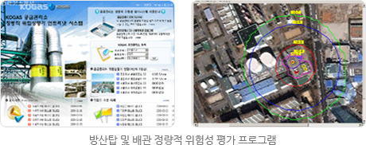
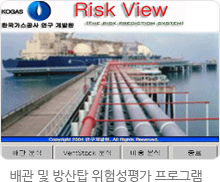
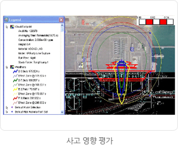
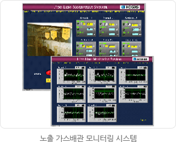
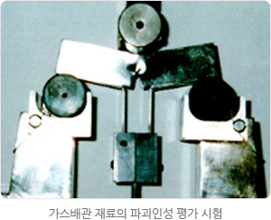
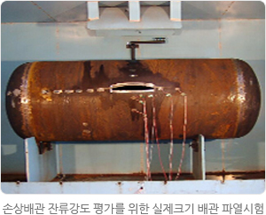
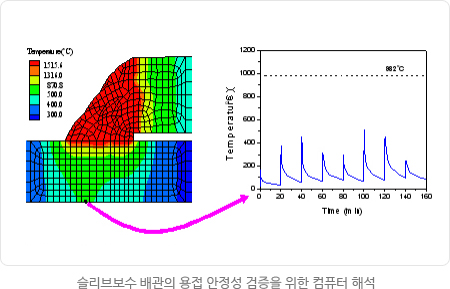
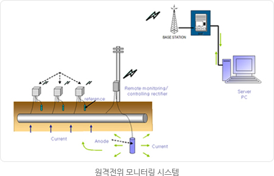
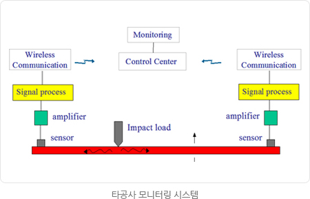

설비기술
안전방재연구
안전방재 연구
1994년 아현사고 이후부터 본격적인 한국가스공사의 안전관리가 시작되었다고 볼 수 있습니다. 이때부터 과학적인 안전관리의 필요성이 대두되어 연구개발원 내에 기술적 뒷받침을 할 수 있는 안전방재 연구분야가 신설되었습니다. "안전은 우리공사 최고의 가치"라고 하는 책임감과 사명으로 전 직원이 사고의 원인을 찾아내고 대책을 강구하는 지속적인 노력을 기울임으로써 오늘도 안전하게 설비를 운영하고 있습니다.
과학적이고 실용적인 안전관리를 지원하기 위해 생산기지 및 공급시설의 정성적평가 기술을 확보하였고, 선진 일부 국가에서만 실용화하고 있는 정량적 위험성평가 기술을 성공적으로 개발, 적용함으로써 국내 최고 수준의 가스안전연구팀으로 평가받고 있습니다. 배관 안전관리를 지원하기 위하여 우리 실정에 맞는 배관위험성평가 프로그램을 개발하였으며, 배관 매설현장의 제3자에 의한 타공사로 발생되는 매설심도 문제, 타구조물과의 저촉, 진동 및 응력집중 문제 등을 해결하고 대책을 제시하는 등 현업부서 지원도 매우 활발하게 진행하고 있습니다. 위험성이 높은 것으로 알려져 있는 지하 노출배관의 안전성을 확보하기 개발한 "노출 가스배관 모니터링 시스템"은 지하철 공사 등으로 노출되는 배관의 구조적 안전성을 24시간 감시함으로써 공사의 과학적 안전관리 능력을 한 단계 업그레이드 할 수 있을 것으로 기대됩니다.
2008년에 개발을 완료한 배관 위치이동기술은 가스가 공급되는 활배관 상태에서 배관이설을 하지 않고 배관을 굴착하여 위치를 이동하는 기술로 배관의 안전을 희생하지 않으면서도 최고의 경제성을 추구하는 기술로 평가받고 있습니다. 앞으로도 우리 안전연구 분야는 노후설비의 안전진단 기술 개발을 포함하여 가스설비의 안전기술을 지속적으로 개발, 적용함으로써 선진국 수준에 도달하는 것을 목표로 하며, 사고 없는 공사를 만들기 위하여 최선의 노력을 다하겠습니다.
과학적이고 실용적인 안전관리를 지원하기 위해 생산기지 및 공급시설의 정성적평가 기술을 확보하였고, 선진 일부 국가에서만 실용화하고 있는 정량적 위험성평가 기술을 성공적으로 개발, 적용함으로써 국내 최고 수준의 가스안전연구팀으로 평가받고 있습니다. 배관 안전관리를 지원하기 위하여 우리 실정에 맞는 배관위험성평가 프로그램을 개발하였으며, 배관 매설현장의 제3자에 의한 타공사로 발생되는 매설심도 문제, 타구조물과의 저촉, 진동 및 응력집중 문제 등을 해결하고 대책을 제시하는 등 현업부서 지원도 매우 활발하게 진행하고 있습니다. 위험성이 높은 것으로 알려져 있는 지하 노출배관의 안전성을 확보하기 개발한 "노출 가스배관 모니터링 시스템"은 지하철 공사 등으로 노출되는 배관의 구조적 안전성을 24시간 감시함으로써 공사의 과학적 안전관리 능력을 한 단계 업그레이드 할 수 있을 것으로 기대됩니다.
2008년에 개발을 완료한 배관 위치이동기술은 가스가 공급되는 활배관 상태에서 배관이설을 하지 않고 배관을 굴착하여 위치를 이동하는 기술로 배관의 안전을 희생하지 않으면서도 최고의 경제성을 추구하는 기술로 평가받고 있습니다. 앞으로도 우리 안전연구 분야는 노후설비의 안전진단 기술 개발을 포함하여 가스설비의 안전기술을 지속적으로 개발, 적용함으로써 선진국 수준에 도달하는 것을 목표로 하며, 사고 없는 공사를 만들기 위하여 최선의 노력을 다하겠습니다.
전략목표
가스설비, 안전성평가 기술 확보
주요업무
- 지속적인 설비 위험성 평가 및 위험관리 시스템 구축
- 방재설비 진단 및 시스템 최적화
- 생산, 공급 가스설비의 안전진단
- 가스설비의 내진성능 평가 및 지진감시시스템 개발
- 노출배관 안전연구 및 모니터링 시스템 개발
- 가스설비 소음 및 진동 해석
- 지하매설물 실증시스템 실험체계 구축
핵심기술
- 가스설비 구조적 안전진단
- 가스설비 구조해석 기술
- 가스공급시설의 정밀안전진단 시스템 개발
  - 가스설비 안전 모니터링 시스템
- 노출 가스배관 모니터링 시스템
- 매설배관 응력 및 변형 감시시스템
 - 지하매설물 실증실험 시스템 구축
- 배관응력, 진동 충격, 배관 위치이동 실험 등이 가능한 실증실험장 구축
- 토하중, 차량하중, 건설장비 하중 등 배관 상부하중 적용 실험
- 미래 배관신기술 개발의 기반
- 매설배관 위치이동 기술
- 배관 위치이동 해석기술 개발
- 배관 위치이동 머니터링 시스템(배관응력, 배관좌표 등)
- 배관 위치이동 절차서 개발
- 지진 관련 기술
- 생산기지 지진 모니터링 시스템 개발
- 가스설비 내진성능평가 기술

배관기술
천연가스 생산공급설비의 안전과 효용 극대화를 목적으로 설계, 시공, 유지관리 시 필요한 재료 및 방식기술을 연구하고 현업부서에 필요한 기술을 지원합니다. 국내 최고기술을 보유하고 있는 배관 전기방식 설계 및 유지관리기술을 포함하여 파손원인 분석기술, 사용가능성평가 및 수명예측기술, 배관보수기술, PNG배관 관련기술 등에서 국내외 연구기관과 견주어 명실상부한 경쟁력을 확보하고 핵심보유 기술의 효율성 제고를 추진하고 있습니다. 향후 가스산업 환경변화에 대응하고 신규부가가치 창출을 위해 한랭지배관, 심해저배관, CCS배관기술 등 새로운 에너지배관 기술개발을 수행하여 국가 기술수요 충족과 수익창출을 이룰 수 있도록 할 것입니다.
전략목표
안전성 향상, 신뢰도 중진, 비용 절감
핵심기술
- 배관재료거동
- 재료선정 및 평가 : 가스설비 금속재료 특성 평가 및 분석
- 용접절차 : 자동 원주용접, 소구경배관 필릿 용접절차 개발
- 파괴제어 : 배관설비 파괴인성 및 연성파괴제어 특성 평가
- 손상해석 : 설비 파손 시 정확한 원인규명 및 해결책 제시
- 건전성평가 및 보수
- 결함평가 : 손상발생 시 재료, 환경 및 하중인자의 복합적 영향 평가
- 보수절차 : 손상부위 보수방안 결정 및 절차 매뉴얼 수립
- 응력해석 : 외부환경 변화 및 특이상태 발생 시 컴퓨터 해석을 통해 신속 정확한 응력변형 상태 평가
- 잔여수명예측 : 실시간 진단결과와 결함거동에 의한 수명측 기법 개발
- PNG배관
- 설계 : 변형기반설계 및 해저배관 설계기술 확보
- 용접 및 비파괴 : 대구경배관 자동원주용접 및 초음파탐상
- 유지보수 : 해저배관 유지관리 기술
- 전기 방식 설계 및 부식 진단
- 전기방식 설계 : 시스템 분석 및 설계
- 현장 방식상태 진단 및 원인 해결
- 진단 장비 개발
- 건전성 관리체계 개발
- 방식 피복
- 피복 재료선정 및 평가 : 피복재료 특성 평가 및 분석
- 피복 공정 개발
- 신규 에너지 배관사업 검토
- 한랭지배관, 심해저배관 설계 및 시공기술
- 공급 기술 검토
- CCS(Carbon Capture & Storage) : CO2 운반용 배관 관련
기술 확보 관련자료




